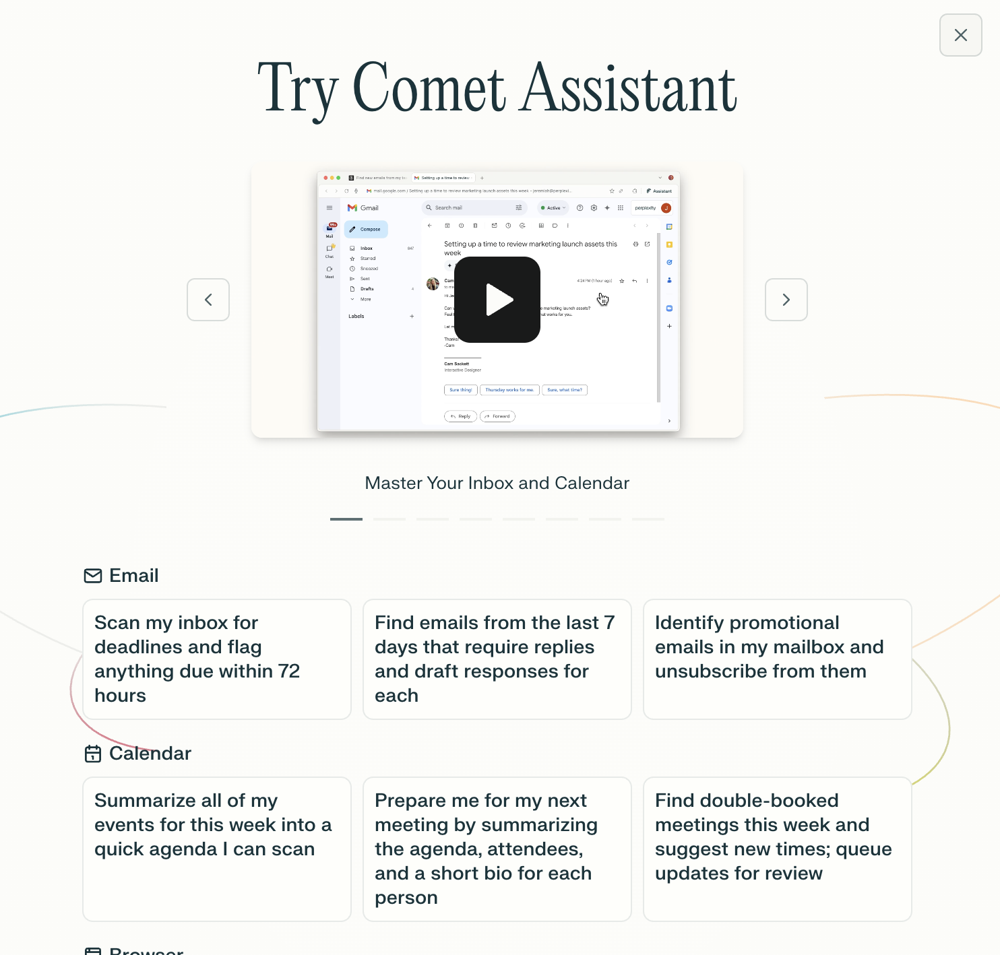
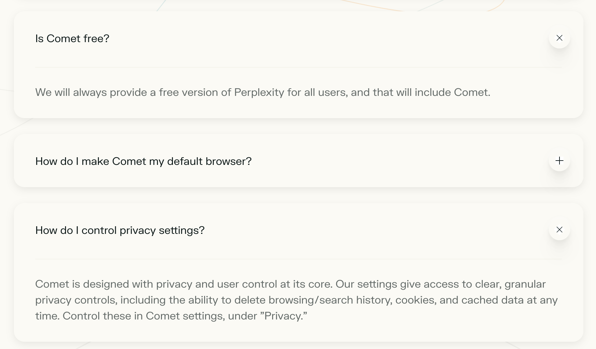

No, this blog post is not about interstellar travel. Earlier this week, we all got access to Perplexity Comet. A few weeks before, I finally got off the waitlist for Strawberry and already had a first taste of agentic browsers. Therefore, I was very excited to try out Comet too.
The benchmark exercise I have used for agentic browsers so far (Operator, Strawberry, and now Comet) is to put all ingredients for a lasagna in the shopping basket of my local supermarket chain.
Anecdotally, Comet and I started off on the wrong foot. After some onboarding screens where I chose not to import bookmarks or share my data, I saw a button labeled "Try assistant." Expecting to see a chat box, I was confused to only see example prompts. I escaped and looked around, then clicked "Try assistant" again. Still no luck. Once more I escaped, stared at the screen, then noticed the "Assistant" button next to the URL bar. I have no idea who thinks it is good UI/UX to have a button "Try assistant" that does not take you to the assistant, nor point you to where to find the assistant. Perplexity, do better!
Once I got past the initial confusion, I had two observations:
Given that I do not pay, I was impressed that I did not feel like I had to sacrifice either speed or accuracy.
I did not switch to Comet for my primary browser. I am quite invested in being privacy-first, using LibreWolf as my daily driver. As I am about to embark on a big trip, I have to book 10+ hotels. Typically, this is a very time-consuming task. You find yourself clicking through Booking.com, copying and double-checking the dates, repeating the same filters over and over again, etc. Dreading this task, I figured: let's give Comet a try.
Having researched my trip with ChatGPT, I asked it to summarize a nice table with all the facts. I copied and pasted the table into Comet's Assistant and asked it to open a browser tab for each hotel location and set the filters (budget, minimum rating, etc.).
Observations:
Examples of where it was not accurate: for one hotel location, it had the dates right but repeated the location from another row in the table. Comet did a great job of ordering the browser tabs by date, even though the ChatGPT output was prioritized by which locations to book first given likelihood to sell out. I liked that Comet reordered the tabs, as it allowed me to quickly validate if I had any gaps. The wrong location therefore stood out, as it was jumping countries too soon. If not for that, I might have realized the mistake when it was too late. Good thing I did not give it my credit card just yet!
The other shortcoming (one could argue it was only laziness) was that, upon Booking.com returning no results for a national park with no hotels inside, it did not try to search nearby villages just outside the park.
For a tool I do not pay for, I am incredibly impressed. I can already see how this will save me so much time with form filling and booking tasks. While the booking for many locations is quite expensive usage already, I did not hit any limits or run out of tokens yet.
At the same time, not paying for it makes me a little worried too. If you do not pay for a product, you are the product. I am quite OK giving Perplexity (and whoever buys or uses their data) insight into my travel habits, but what else am I giving up in the free plan? Is my data "safer" if I would pay for it? What if I would have it fill out my visa application forms? A lot of questions, and few precise answers in the FAQ.
Next on my list was booking several car rentals. I did not think twice about using Comet. I am hooked; there is no way back to doing things the old way. Can I imagine paying for this? Yes, a couple of euros a month, easy.